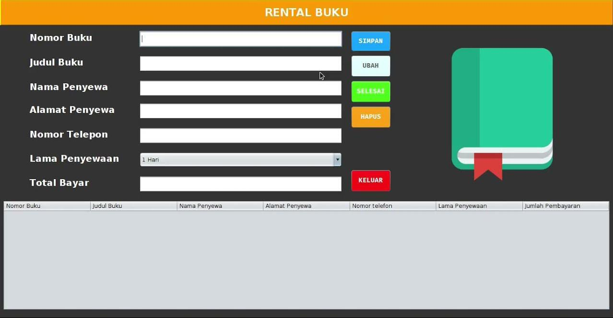
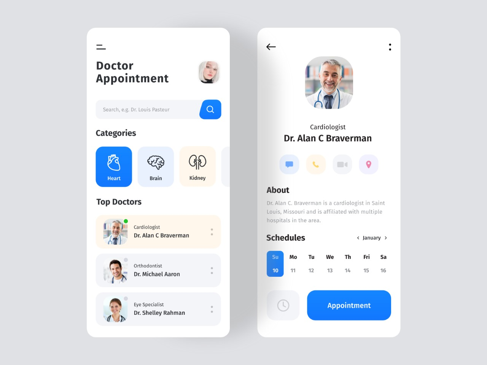
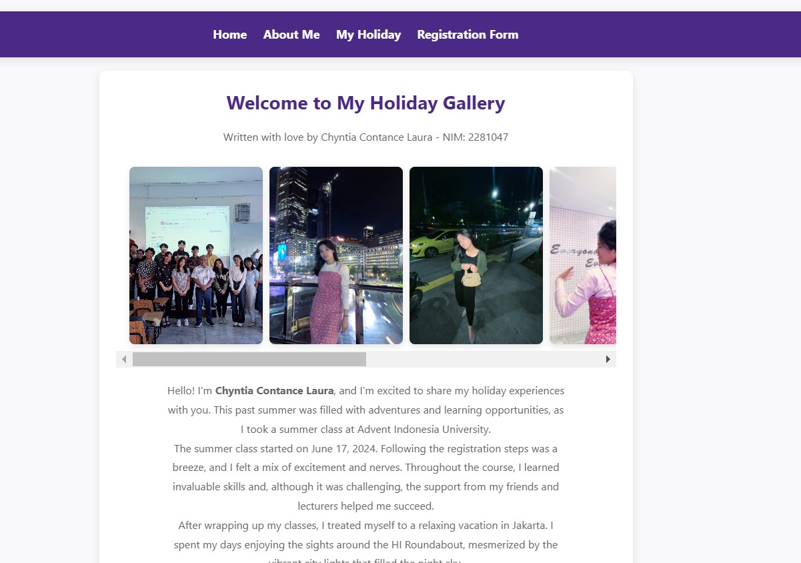
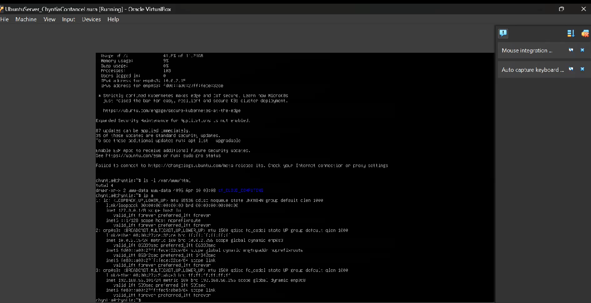

Aplikasi Mobile Rental Buku
Pengembangan aplikasi mobile untuk mendukung proses penyewaan dan pengelolaan informasi buku.
Mobile ApplicationLulusan Teknik Informatika dengan predikat Cumlaude dan pemegang sertifikasi internasional Alibaba Cloud. Memiliki pengalaman di bidang teknologi informasi, administrasi, pengelolaan data, dan media sosial.

GPA / Cumlaude
Days Internship
Certification
Research Project
Saya merupakan lulusan S1 Teknik Informatika dari Universitas Advent Indonesia dengan predikat Cumlaude dan IPK 3.51. Saya memiliki sertifikasi internasional Alibaba Cloud serta ketertarikan untuk mengembangkan karier di bidang teknologi informasi, administrasi, pengelolaan data, dan digital. Saya memiliki pengalaman sebagai IT Specialist Intern dengan keterlibatan dalam pengolahan data, pengelolaan database, pengembangan website, serta dukungan teknis. Pengalaman tersebut membantu saya membangun pemahaman mengenai penerapan teknologi informasi dalam mendukung kebutuhan operasional perusahaan. Selain itu, saya memiliki pengalaman dalam administrasi event, registrasi peserta, verifikasi data, pelayanan pelanggan, dan koordinasi operasional. Saya juga memiliki pengalaman sebagai Social Media Specialist & Database Management, dengan tanggung jawab dalam perencanaan konten, pengelolaan media sosial, penyusunan jadwal publikasi, serta pengelolaan database dan dokumentasi digital perusahaan. Saya terbiasa menggunakan Microsoft Office, Google Workspace, Canva, dan Adobe Photoshop, serta memiliki pemahaman mengenai pengembangan website dan pengelolaan basis data. Saya merupakan pribadi yang teliti, adaptif, bertanggung jawab, komunikatif, dan memiliki kemauan belajar yang tinggi. Saya mampu bekerja secara mandiri maupun dalam tim serta siap mengembangkan kompetensi melalui pengalaman kerja langsung di lingkungan profesional. Melalui program MagangHub, saya berharap dapat memperdalam keterampilan, memperoleh pengalaman industri, dan memberikan kontribusi positif sesuai dengan kompetensi serta tanggung jawab yang diberikan.
IT Specialist Intern
Bertanggung jawab dalam mendukung kebutuhan operasional teknologi informasi, pengelolaan data, serta pengembangan sistem berbasis web.
Staff Admin Registrasi (Event)
Mendukung kelancaran proses administrasi dan registrasi peserta selama kegiatan event berlangsung.
Freelance
Mengelola layanan jasa digital dan akademik dengan berfokus pada pelayanan pelanggan, administrasi pesanan, serta pembuatan materi visual.
Social Media Specialist & Database Management
Artist Management & Digital Operations
Bertanggung jawab dalam mendukung seluruh kebutuhan manajemen artis dan calon artis, perencanaan konten digital, pengelolaan media sosial, serta pengelolaan database dan arsip digital perusahaan. Berperan dalam memastikan aktivitas manajemen artis dan operasional digital PT Mastervokal Indonesia berjalan secara terstruktur dan terdokumentasi dengan baik.
Data Entry, Sales Data Management, Microsoft Excel, Word, PowerPoint, administrasi dokumen, dan ketelitian pengolahan data.
Registration, On-site Event Administration, Customer Service, Participant Verification, Scheduling, Booking, dan Time Management.
Operational Database Management, Google Drive Management, Digital Documentation, dan Alibaba Cloud Certified.
HTML, CSS, PHP, Laravel, Vue.js, C++, C#, JavaScript, Python, Arduino, ESP32, Sensor, dan GPS Integration.
Hardware Troubleshooting, Software Troubleshooting, Maintenance, dan dukungan sistem teknologi informasi.
Canva, Google Sites, Adobe Photoshop, Corel Draw, Content Planning, Social Media Management, dan Digital Publication.

Pengembangan aplikasi mobile untuk mendukung proses penyewaan dan pengelolaan informasi buku.
Mobile Application
Pengembangan website layanan kesehatan dengan konsep dan fitur yang terinspirasi dari platform Halodoc.
Web DevelopmentPerancangan tampilan dan pengalaman pengguna untuk platform e-commerce produk jam tangan menggunakan Figma.
UI/UX Design
Pembuatan website personal untuk menampilkan informasi profil dan biodata secara digital.
HTML & CSS
Praktik instalasi kabel jaringan LAN dan pemahaman dasar konfigurasi jaringan komputer.
Networking
Dokumentasi kegiatan dan pembelajaran mengenai teknologi cloud computing.
ViewWebsite portofolio proyek magang yang menjadi salah satu dokumentasi hasil pekerjaan dan pengalaman dalam bidang teknologi informasi.
Visit Project WebsiteWebsite resmi Aneka Mitra Cipta sebagai referensi proyek dan dokumentasi lingkungan kerja profesional.
Visit Official WebsiteFinal Project / Skripsi
Penelitian dan pengembangan sistem monitoring lansia berbasis Internet of Things (IoT) yang dirancang untuk membantu memantau aktivitas serta memberikan informasi ketika terdeteksi kondisi yang membutuhkan perhatian. Sistem memanfaatkan sensor gerak dan koordinat darurat untuk mendukung pemantauan serta penyampaian notifikasi.
S1 Teknik Informatika
2022 – Juni 2026
Alibaba Cloud Certified Associate
International Certification